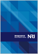

サイトマップ
ホーム > 企業情報 > 会社概要
会社概要
NRIの会社概要をご覧いただけます。
| 社名 | 株式会社野村総合研究所 |
|---|---|
| 英文社名 | Nomura Research Institute, Ltd. |
| 証券コード | 4307 東証第一部 |
| 法人番号 | 法人番号4010001054032 |
| 本社所在地 | 〒100-0004 東京都千代田区大手町1-9-2大手町フィナンシャルシティ グランキューブ アクセスマップ |
| 代表電話番号 | 03-5533-2111 |
| 創業日 | 1965年4月1日 |
| 資本金 | 186億円 |
| 代表者 | 代表取締役社長 此本 臣吾 |
| 従業員数 | 6,130人 (NRIグループ12,708人) 2018年3月31日現在 |
| 連結売上高 | 4,714億円 (2018年3月期) |
| 事業概要 | コンサルティング、金融ITソリューション、産業ITソリューション、IT基盤サービス |
企業案内ムービー

野村総合研究所を動画でご紹介します。
企業案内パンフレット
野村総合研究所の会社案内パンフレットをダウンロードいただけます。
企業情報
経営方針
- 社長メッセージ
- 企業理念
- NRIのDNA
- 経営ビジョン
- 品質向上・リスク管理
- 人材の育成
- 内部統制
- NRIグループ企業行動原則
- NRIグループビジネス行動基準
企業案内
- 会社概要
- 沿革
- 役員構成
- 組織図
- NRIグループ
- NRIグループ海外拠点
- その他の関連会社・団体
- 写真で見るNRIの活動
- 未来創発の奇跡
ビジネスパートナーの皆さまへ
- NRIグループの調達方針
事業・サービス
- コンサルティング
- 金融ITソリューション
- 産業ITソリューション
- IT基盤サービス
- グループ企業
- グローバル企業
- NRIsolutions 事例紹介
- 未来創発センター
NRIオピニオン
- 定期刊行物
- 提言・調査レポート
- 未来創発センター
- NRI未来ナビ
- NRI未来年表
NRIジャーナル
ニュース
- ニュースリリース
- お知らせ
サステナビリティ
- トップメッセージ
- NRIグループのCSR方針
- サステナビリティ トピックス
- ステークホルダー・ダイアログ
- コンプライアンスの推進
- 環境への取り組み
- NRI学生小論文コンテスト
- キャリア教育プログラム
- 東日本大震災復興支援への取り組み
- ダイバーシティマネジメント
- 健康経営
- 過去の取り組み・CSR報告書
IR情報
- 社長メッセージ
- 決算短信
- 説明会資料
- IRカレンダー
- 電子公告
- 統合レポート（アニュアルレポート）
- 個人投資家の皆さまへ
採用情報
- 新卒採用
- キャリア採用
- インターンシップ
- 障がい者採用
- アジア拠点採用
イベント
- NRI未来創発フォーラム
- NRI学生小論文コンテスト
- NRIメディアフォーラム
- その他のイベント